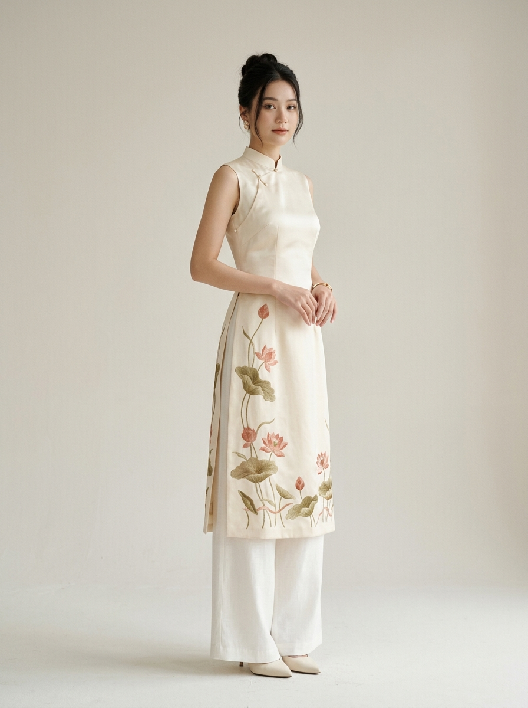
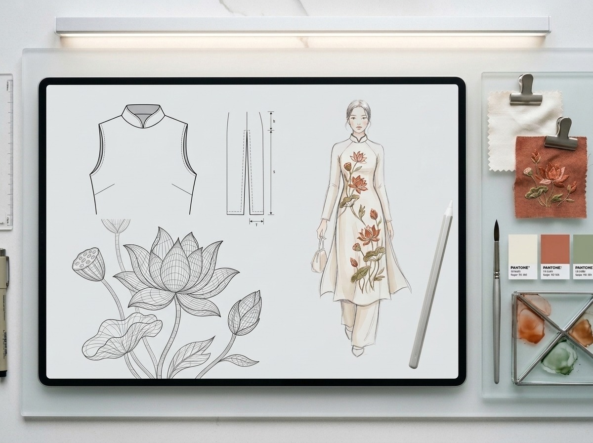

Trang chủ / Bộ sưu tập / Chiều Hồ Tây
Áo dài cách tân Chiều Hồ Tây

Đã may mẫu
Bộ sưu tập: Gió Lụa
Giá dự kiến: 650.000đ
Thông tin nhanh
- Chất liệu: lụa pha (tơ tằm và cotton), quần linen.
- Màu: kem, họa tiết thêu màu hồng đất.
- Dáng: áo dài ngắn qua hông, tà xẻ thấp, dễ đi xe máy.
- Size: S, M, L, XL, XXL – xem bảng size.
- Thêu tay khoảng 6 giờ cho mỗi áo.
Câu chuyện thiết kế
Thu Hà rất thích mặc áo dài nhưng thấy áo dài truyền thống khó mặc khi đi học: tà dài dễ vướng xe, vải dày thì nóng. Bạn ấy muốn có một chiếc áo dài "mặc được mỗi ngày".
Một buổi chiều ngồi bên Hồ Tây, nhìn những lá sen cuối mùa nghiêng theo gió, Thu Hà vẽ ngay những đường cong đầu tiên. Lá sen trở thành họa tiết thêu chính của mẫu áo.
Những điều nhóm đã thay đổi so với áo dài truyền thống
- Tà áo ngắn qua hông thay vì dài chấm gót.
- Cổ áo thấp 2 cm cho đỡ nóng cổ.
- Dùng lụa pha cotton để thấm mồ hôi tốt hơn lụa nguyên chất.
- Phối cùng quần linen ống rộng thay cho quần lụa.
Từ bản vẽ đến sản phẩm
